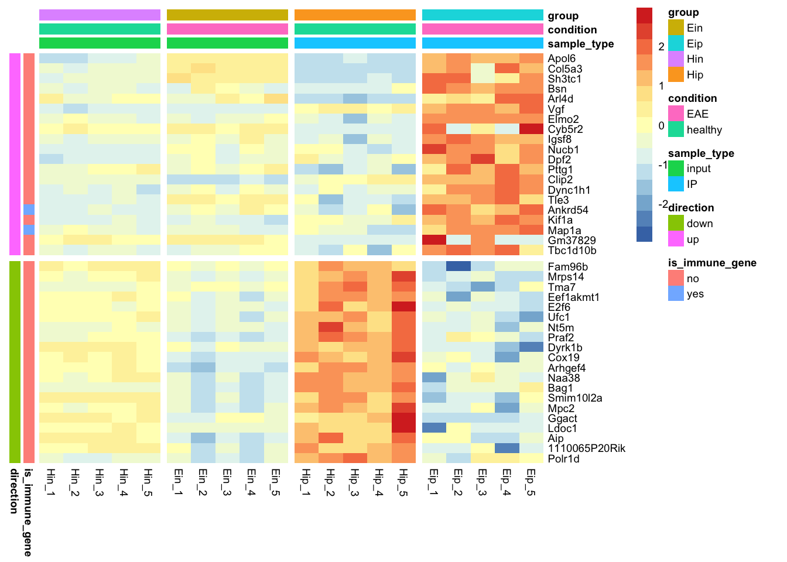

The goal of tidyheatmaps is to provide a tidyverse-style interface to the powerful heatmap package pheatmap by @raivokolde. This enables the convenient generation of complex heatmaps from tidy data with minimal code.
Installation
You can install tidyheatmaps from GitHub with:
# install.packages("devtools") devtools::install_github("jbengler/tidyheatmaps")
Example
Given a tidy data frame of gene expression data like data_exprs, you can easily generate a customized heatmap.
library(tidyheatmaps) tidy_heatmap(data_exprs, rows = external_gene_name, columns = sample, values = expression, scale = "row", annotation_col = c(sample_type, condition, group), annotation_row = c(is_immune_gene, direction), gaps_row = direction, gaps_col = group )
